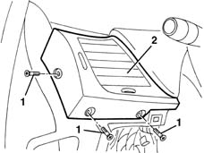
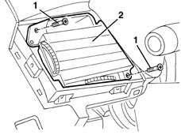

5010C22 Dynamic side air VENT in dashboard (one) left or right - R.R.
- Path
- Procedures > 50 AUXILIARY UNITS > 5010 CLIMATE CONTROL - MISCELLANEOUS > 5010C air outlet and diffusers > 5010C22 Dynamic side air VENT in dashboard (one) left or right - R.R.
- Kind
- repair procedure (removal / refitting; the operation number is the code)
- Applies to
- all engines; all production periods
- Interactive page
- https://sloeber94.github.io/elrnDB-lYpsln/en/#/2429284
Applies to: all engines; all production periods
 Removing
Removing
 Refitting
Refitting7040A30 Left instrument panel lower TRIM - R.R. (for the driver's side vent)
7040A18 glove compartment on facia - arrange (for the passenger side vent)
1. Undo the bolts.
2. Remove the vent trim.

Applies to: all engines; all production periods
1. Undo the bolts.
2. Remove the vent.

Applies to: all engines; all production periods
Refitting
RemovingCheck that the vent is not damaged.
Position the vent and secure it using the bolts.
Position the vent trim and fasten it using the bolts.
7040A18 glove compartment on facia - arrange (for the passenger side vent)
7040A30 Left instrument panel lower TRIM - R.R. (for the driver's side vent)